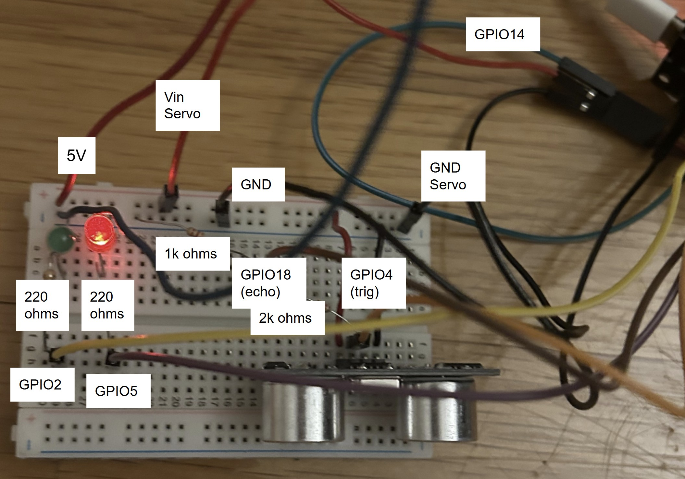

How It Works
The ultrasonic sensor continuously checks distance. If an object is detected closer than a threshold (15 cm), the ESP32 activates the servo. The servo rotates to open the gate. After a short delay, the servo resets to close the gate. LEDs indicate gate state (red = closed, green = open).
Skills Used
- Ultrasonic distance sensing (HC-SR04)
- Servo-controlled gate movement (SG90)
- Voltage divider for safe sensor input
- Microcontroller use (ESP32)
- C++
Hardware
- ESP32 Dev Board
- SG90 Servo Motor
- HC-SR04 Ultrasonic Sensor
- 4x Resistors (1k ohm + 2k ohm for voltage divider, 2x 220 ohms for LEDs)
- 2x LEDs (Red and Green)
- Breadboard & Jumper Wires
- Power Supply (5V)
Circuit Diagram

Voltage Divider
I used the Voltage Divider Equation:
\[ V_{out} = V_{in} \times \frac{R_2}{R_1 + R_2} \]
To solve for the resistor ratio when dropping from 5V to 3.3V:
\[ \frac{R_1}{R_2} = \frac{V_{\text{in}}}{V_{\text{out}}} - 1 = \frac{5}{3.3} - 1 = 0.515 \]
This means \( R_1 = 0.515 \cdot R_2 \). I opted for \( R_2 = 2k\Omega \), making \( R_1 \approx 1k\Omega \).
Distance Equation
I took the time for the ultrasonic sensor's echo to return and calculated distance from the sensor to the object. The speed of sound is approximately 343 m/s = 0.0343 cm/μs. Dividing by two accounts for the round trip:
\[ \text{Distance} = \frac{\text{duration} \times 0.034}{2} \]
\[ \texttt{float dist = duration * 0.034 / 2;} \]
Gate Logic
If an object is less than 15 cm away the green LED turns on, the red LED turns off, and the gate opens. When an object is more than 15 cm away the green LED turns off, the red LED turns on, and the gate closes.
\[
\begin{aligned}
&\texttt{if (dist < 15) \{} \\
&\quad \texttt{digitalWrite(LED\_Green, HIGH);} \\
&\quad \texttt{digitalWrite(LED\_Red, LOW);} \\
&\quad \texttt{myServo.write(0);} \\
&\texttt{\} else \{} \\
&\quad \texttt{digitalWrite(LED\_Green, LOW);} \\
&\quad \texttt{digitalWrite(LED\_Red, HIGH);} \\
&\quad \texttt{myServo.write(90);} \\
&\texttt{\}}
\end{aligned}
\]
 View on GitHub
View on GitHub